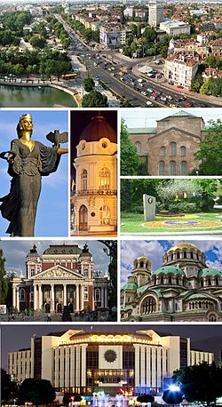
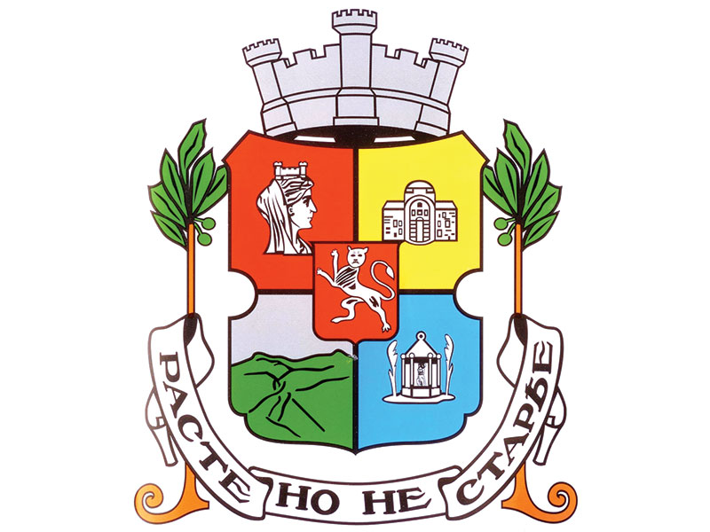
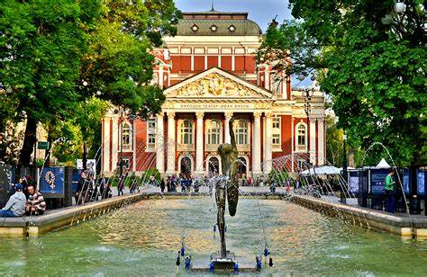

Sofia
От Уикипедия
Девиз: Расте, но не старее

Со̀фия е столица на България и неин най-голям град. Тя е 14-ият най-голям град по брой жители в Европейския съюз, с население 1 241 675 души. Според резултатите от преброяването през 2011 г. населението на града е 1 291 591, което представлява 17,5% от населението на България. София е разположена в централната част на Западна България, в Софийската котловина и е заобиколена от планини: Витоша и Плана от юг, Софийската планина от север, Люлин от запад, и Лозенската планина от изток. Това я прави четвъртата по височина столица в Европа
Известна като Сердика в древността и Средец през Средновековието, София е област на човешко обитаване от най-малко 7000 пр.н.е. Записаната история на града започва с атестацията за завладяване на Сердика от Римската република през 29 пр.н.е. от келтското племе Серди. По време на упадъка на Римската империя, градът е бил нападан от хуни, вестготи, Авари и славяни. През 809 г. Сердика е включена в Българската империя от Хан Крум и става известна като Среднац. През 1018 г. византийниците прекратяват българското управление до 1194 г., когато тя е реконкорпорирана от преродената Българска империя. Седец става основен административен, икономически, културен и литературен хъб до завладяването му от османците през 1382 година. От 1530 до 1826 г. София е регионалната столица на Румелия Еялет– ключовата провинция на Османската империя в Европа. Българското управление е възстановено през 1878 г. София е избрана за столица на Третата българска държава през следващата година, с което се определя период на интензивен демографски и икономически растеж.
София е обявена за едно от десетте най-добри места за стартиращите предприятия в света, особено в информационните технологии. София беше най-достъпният капитал на Европа за посещение през 2013 г. През 1979 г. боянската църква в София е включена в Списъка на световното наследство, а тя е деконструиран във Втората българска империя, притежавайки много патримонална символика към Българската православна църква. Със своето културно значение в Югоизточна Европа, София е дом на Националната опера и балет на България, НДК, Националния стадион "Васил Левски", Националния театър "Иван Вазов", Националния археологически музей, и амфитеатърът "Сердика". Музеят на социалистическо изкуство включва много скулптури и плакати, които образоват посетителите за начина на живот в комунистическа България.
Наименование
Най-ранното запазено в източниците наименование на днешния град София е Сердонполис, грецизирано название, чийто латински вариант е civitas Serdensium. Смята се, че то означава „град на сердите“. Тези серди (по Дион Касий) вероятно са обитавали областта през I век пр. Хр. по сведения от II век сл. Хр.Мнозина автори обаче си задават въпроси относно сердите: „ Този етноним е все още фантом.“ (Александър Фол)Въпроси буди и взаимовръзката „Сердика – серди“: „Тогава, кой кого е кръстил? Обитателите града или градът – своите обитатели?“ (Христо Генчев)
След присъединяването на града към България в началото на IX век за име на Сардика/Сердика официално започва да се използва и Средец (Срѣдецъ). Това може да се разглежда като ранносредновековно българско осмисляне на името Сардика/Сердика, като в същото време отразява и значението „среда“ – от централното разположение на града в Софийското поле, както и възможното значение на среден/централен град на околното население.
В старогръцки източници от този период се използва и името Триадица. Произходът му не е изяснен, като е възможно то да е неточна транскрипция на Средец (първата гласна в Средец е ѣ (ят) и името вероятно се е произнасяло и като Срядец). Възможно е също 'Триадица' да произлиза от названието 'Средица' (произнасяно в българската езикова среда като 'Стредица/Стреадица') с изпуснато начално 'с' (като резултат от езиковия развой Сердика > Средика/Стредика > Средица/Стредица или, алтернативно, Сердика > Сердица > Средица/Стредица). Друга предлагана възможност, която повечето съвременни автори отхвърлят, е наименованието да идва от гръцката винителна форма на Светата Троица (Ἁγία Τριάδα) по името на неизвестна днес църква в града.

През XIV век градът започва да се споменава и като София, от името на съборната[5] църква „Света София“, която, разположена на възвишение извън Източното входно крепостно съоръжение (Източната порта – разг.), по това време доминира градския силует.
Името София е регистрирано в приписката към Средечкото евангелие от 1329 г., в кореспонденцията на дубровнишки търговци около 1350 г., както и във Витошката грамота на цар Иван Шишман от края на XIV век. В тези документи областта и жителите продължават да се наричат и средечки,[16] а името Средец продължава да се използва вкл. и през първите години след Освобождението.
След 1878 г., с решение на градската управа, градът възстановява българското си име Средец, но малко след това, по настояване на Временното руско управление, е върнато името София. През 1879 г. се разгаря спор за името, като жителите на града създават комитет от известни личности, който се застъпва за възстановяване на историческото име Средец.
География
Местоположение
Историческият център на София е разположен непосредствено на юг от центъра на Софийското поле, една от Задбалканските котловини, разположена между Стара планина на североизток и планините Люлин, Витоша, Плана и Лозенска на югозапад. Съвременният град заема значителна част от Софийското поле, като е развит в по-голяма степен на югоизток и югозапад от историческия център, достигайки ниските части на Витоша, но най-североизточните му квартали – Сеславци и Кремиковци – са разположени по склоновете на Стара планина.

Землището на град София има площ 492 km²,[18] като освен урбанизирана територия обхваща и съседни земеделски и горски терени, включително значителна част от планината Витоша. То граничи със землищата на 3 града (Банкя, Бухово и Нови Искър) и 27 села (Бистрица, Железница, Плана, Бусманци, Владая, Волуяк, Герман, Горни Богров, Долни Богров, Долни Пасарел, Иваняне, Казичене, Клисура, Кокаляне, Кривина, Кубратово, Лозен, Локорско, Мало Бучино, Мировяне, Мрамор, Мърчаево, Негован, Огоя, Панчарево, Чепинци и Яна) от Столична община, 5 села (Големо Бучино, Дивотино, Кладница, Люлин, Чуйпетлово) от община Перник, 2 села (Гурмазово, Пожарево) от община Божурище и 1 село (Ябланица) от община Своге.
Пет планински прохода водят към града – Искърски, Владайски, Драгомански, Петрохански и Витиня. През тях още в древността минават важни пътища, свързващи Адриатика и Средна Европа с Черно и Егейско море, и Близкия изток. Благодарение на стратегическото местоположение на Балканския полуостров, София и в миналото е била голям, оживен град, търговски, туристически и културен център. През нея протичат няколко маловодни реки, най-големи от които са Владайската и Перловската река. Край източните квартали тече река Искър, но в този си участък тя не е пълноводна. София е известна от древността с многобройните си минерални извори (15 находища с общ дебит на водите 130 l/s). През последните 60 години са построени и изкуствени езера и язовири.
Столицата се намира на 145 km от Пловдив, на 441 km от Варна, на 360 km от Бургас по Автомагистрала Тракия, на 309 km от Русе, на 232 km от Стара Загора, на 34 km от Перник, на 103 km от Кюстендил, на 101 km от Благоевград, на 58 km от ГКПП Калотина, на 99 km от ГКПП Стрезимировци, на 127 km от ГКПП Гюешево, на 181 km от ГКПП Кулата-Промахон. Разстоянието до мегаполиса и най-голям турски град Истанбул е 550 km, а до турската столица Анкара е 993 km. Разстоянието до румънската столица Букурещ е 384 km, до гръцката столица Атина е 791 km, до сръбската столица Белград е 393 km, а до северомакедонската столица Скопие е 244 km.